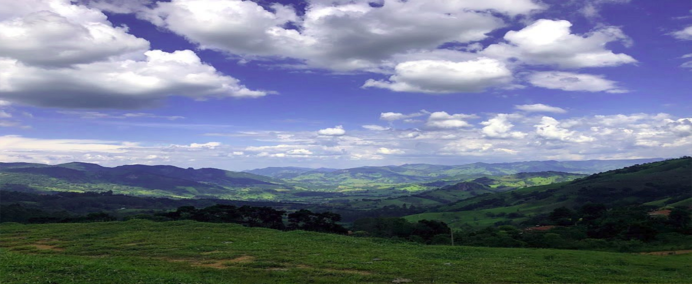
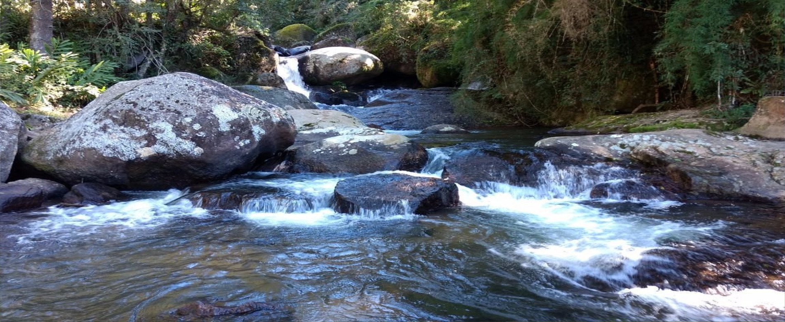
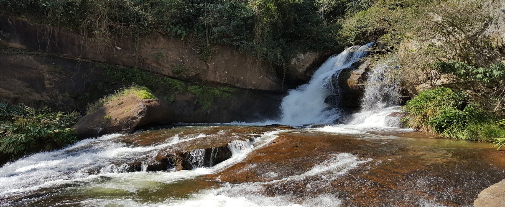

É possível tomar banho ( bem gelado, por sinal!) ou mesmo aproveitar o sol nas pedras, que é uma das maiores cachoeiras de Gonçalves. Parte de seu percurso fica em um trecho bem pertinho do centro da cidade. A Cachoeira do Retiro fica localizada na propriedade da Pousada Solar D’Araucária.
Cachoeira Sete Quedas